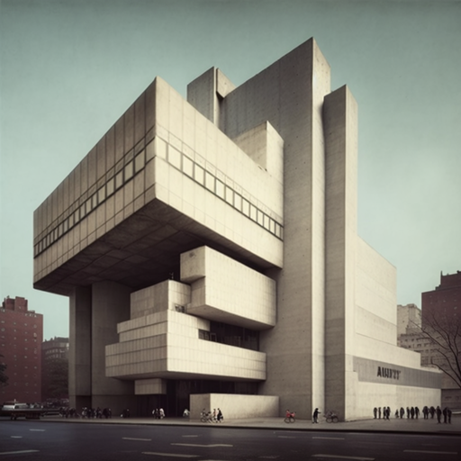

Brutalist architecture emerged in the mid-20th century as a response to the growing urbanization of cities and the need for large, functional buildings. The term "brutalist" was coined by the British architects Alison and Peter Smithson, who used the term to describe their own work in the 1950s.
The defining characteristic of brutalist architecture is its use of raw, unadorned materials such as concrete, steel, and glass. These materials are often left exposed, giving the buildings a rough and rugged appearance. Brutalist buildings are also characterized by their bold, blocky forms and their use of geometric shapes and angles.
Brutalism became popular in the 1960s and 1970s, particularly in government and institutional buildings such as schools, hospitals, and public housing projects. In the United States, Brutalism was often associated with urban renewal projects and the modernist movement.
While many Brutalist buildings were criticized for their stark and austere appearance, others were praised for their honesty and functionality. Brutalism fell out of favor in the 1980s and 1990s, as architects and designers embraced a more postmodernist approach to design. However, in recent years, there has been renewed interest in Brutalist architecture, with many of these buildings being preserved and celebrated for their unique aesthetic and historical significance.